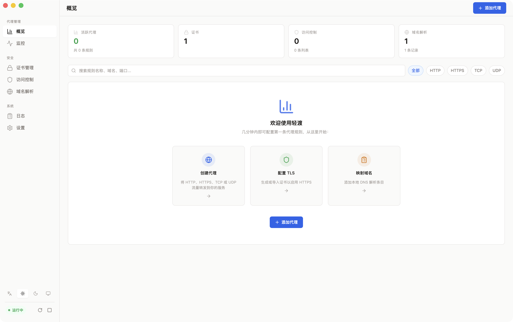
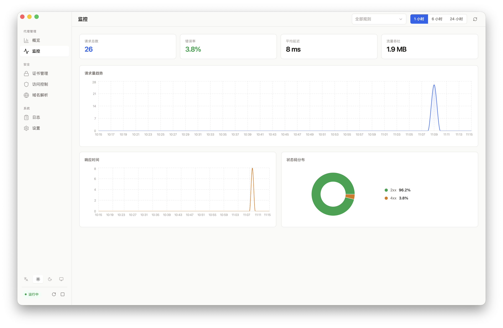
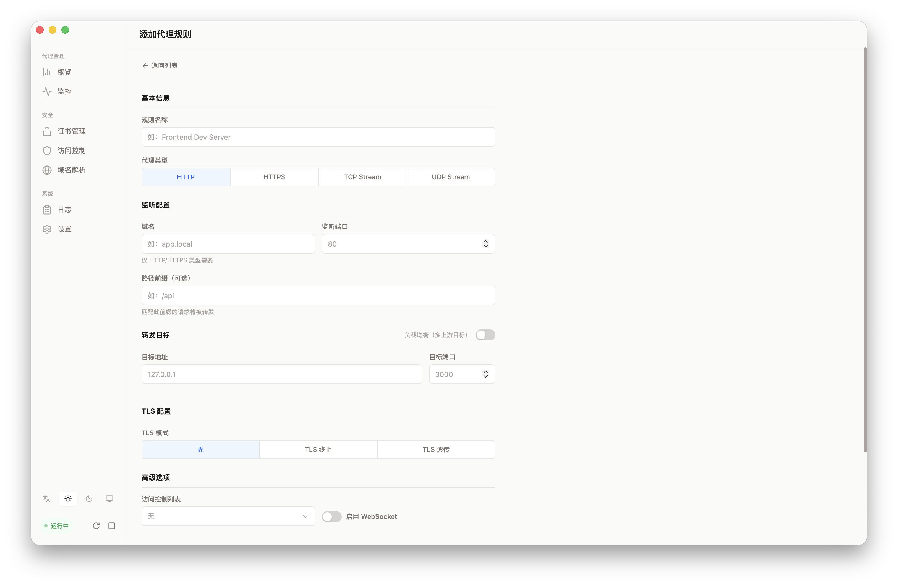
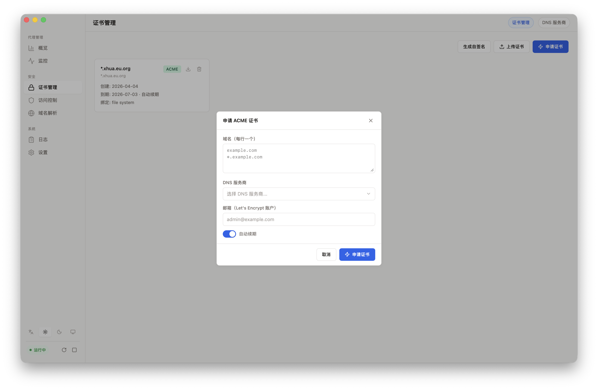
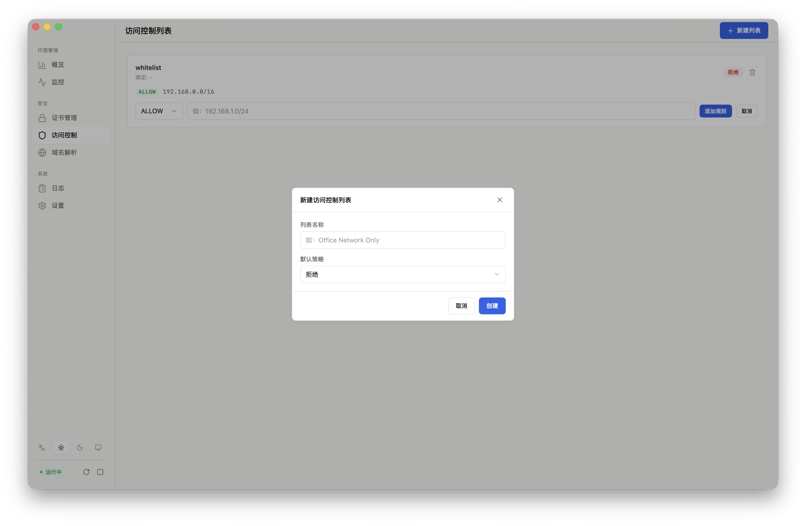
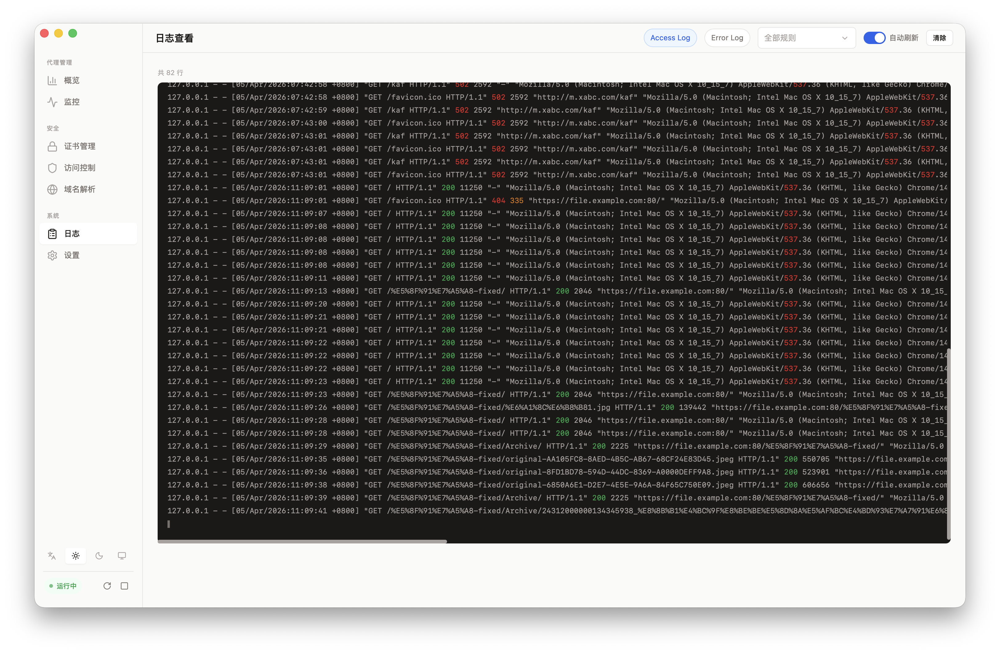

macOS · Windows · Linux · Free
Meridian
轻渡
优雅的本地代理管理器。可视化管理反向代理、SSL 证书与访问控制，内置 Nginx 引擎，开箱即用。
原生桌面应用
内置 Nginx
自动 TLS
跨平台
HTTP / HTTPS / TCP / UDP支持四种代理模式、多上游负载均衡、WebSocket、自定义 Header 和路径前缀路由。
证书全自动管理一键自签名、上传 PEM、ACME 自动申请 Let's Encrypt，支持通配符域名。
告别手写 nginx.conf可视化界面操作，实时配置验证，出错自动回滚，再也不用手动编辑配置文件。
免费下载
v0.1.0 · macOS / Windows / Linux
Core Features
核心功能
一站式本地代理管理，从创建规则到签发证书，一切尽在掌握。
反向代理
HTTP/HTTPS/TCP/UDP 四种模式，支持域名路由、路径前缀和多上游负载均衡。
SSL 证书管理
自签名、PEM 上传、ACME 自动申请，支持 Cloudflare / AliDNS / DNSPod / Route 53。
访问控制
创建 IP 黑白名单，支持 CIDR 网段，按优先级有序匹配，绑定任意代理规则。
实时监控
请求量、错误率、响应延迟、带宽统计，可视化图表，支持按规则筛选。
Hosts 管理
可视化编辑本地 DNS，一键同步系统 hosts 文件，智能关联代理规则。
系统托盘常驻
关闭窗口后台运行，托盘菜单快速控制引擎启停，显示运行时间。
Nginx 引擎管理
内置预编译 Nginx，零依赖开箱即用。
- 一键启停与重载侧边栏实时状态指示，启动 / 停止 / 重载一键操作。
- 配置预检每次重载前自动运行 nginx -t 验证配置，失败自动回滚到上一个有效版本。
- 开机自启支持随系统启动，并可设置自动启动引擎，全程无需手动干预。
- 健康检查后台持续监控 Nginx 进程状态，异常退出时即时通知前端。
原生体验
为每个平台精心适配的桌面体验。
- macOS 毛玻璃侧边栏NSVisualEffect 磨砂质感，红绿灯按钮无缝集成。
- Windows Mica 材质Windows 11 Mica 透明效果，旧版本优雅降级。
- 极致轻量安装包约 10 MB，空闲内存不到 150 MB，启动不超过 3 秒。
- 多语言中英文完整覆盖，自动识别系统语言，可随时切换。
应用截图
真实界面展示，所见即所得。






规格与隐私
平台macOS / Windows / Linux
引擎Nginx 1.26 (内置)
安装包~10 MB
语言中文 / English
隐私
Meridian 完全离线运行，不收集任何用户数据。所有代理规则、证书和配置仅保存在本地。
开发者Xiaohua Pan
©2026